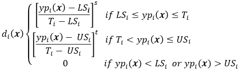
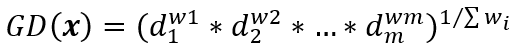
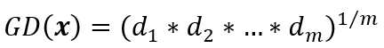
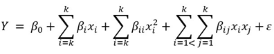

install.packages(c("readr", "rsm", "desirability", "colorRamps"))The data and code for this publication can be found in the following repository: simultaneous-optimization.
The problem of optimizing several response variables
When we perform an experiment it is common to quantify more than one response variable in each of our experimental units. Depending on our objectives or needs, we might be interested in maximizing and/or minimizing some responses, while some others would only be measured to characterize the process, but we want them to stay within defined limits. How do we approach optimization taking into account each response variable? In other words, we want to find an optimal solution that allows us to find the best, or desirable, values for each response.
One way to solve the above problem is by means of the desirability function method, which allows us to obtain a global optimum taking into account all the response variables.
In general, the desirability function method consists of defining a function that covers the entire experimental region and estimates the global desirability (\(GD\)). The \(GD\) in turn is defined taking into account all the responses, which allows to reduce a multivariate optimization problem to a single variable one. The objective becomes maximizing \(GD\).
To define GD we first transform each predicted response \(yp_i(x)\) into an individual desirability value \(d_i(x)\) that falls in the interval \([0, 1]\). The transformation \(d_i(x)\) of each response is performed according to the target values set by the investigator and measures the desirability at the experimental point or treatment \(X = (x_1, x_2, x_3, ..., x_k)\), where each \(x_i\) corresponds to each of the experimental factors considered in the design.
If the variable \(yp_i(x)\) has an upper specification (\(US_i\)), a lower specification (\(LS_i\)) and its target value is \(T_i\), the transformation \(d_i(x)\) is defined as:

The exponents \(s\) and \(t\) are used to choose the form of the transformation. Assigning large values to these exponents, greater than or equal to 5, for example, will only yield desirability values close to 1 when \(yp_i(x)\) is sufficiently close to the target value. On the other hand, selecting small values of \(s\) and \(t\) \((≤ 0.10)\) will yield desirability values close to 1 for a wide range of values within the interval \([LS_i, US_i]\). If both exponents are selected equal to 1, a linear increase in desirability will be obtained as the values of \(yp_i(x)\) approach the target value.
Once the \(m\) desirabilities have been calculated for the \(m\) responses at the point within the experimental region \(X_i\), the \(GD\) at \(X_i\) is defined by a weighted geometric mean:

In this case, the weights \(w_i\) are constants that are assigned to balance the relative importance of each response variable compared to the others. The larger the value of \(w\), the greater the requirement that the \(GD\) result benefits that response. If we select a value of 1 for each \(w\), the above equation reduces to:

The global optimum experimental point \(X_0\) is the point at which the value of \(GD(X_0)\) is maximum. To find this maximum value we apply a numerical method.
With this brief explanation of the method, it is now time to perform a practical example with R code. For this I will use the data published in George Derringer & Ronald Suich (1980).
Packages
For this post I used the readr, rsm, desirability and colorRamps packages. If you haven’t installed them you can run the following code to do so:
Import data
The experimental data are in a CSV file and have the usual structure of a design matrix. To import the data from the repository of this post we can use the read_csv() function of the readr package:
library(readr)
data_tires <- read_csv("https://raw.githubusercontent.com/juanpa-biotech/simultaneous-optimization/master/data_tires.csv")
head(data_tires)# A tibble: 6 × 7
x1 x2 x3 Y1 Y2 Y3 Y4
<dbl> <dbl> <dbl> <dbl> <dbl> <dbl> <dbl>
1 -1 -1 1 102 900 470 67.5
2 1 -1 -1 120 860 410 65
3 -1 1 -1 117 800 570 77.5
4 1 1 1 198 2294 240 74.5
5 -1 -1 -1 103 490 640 62.5
6 1 -1 1 132 1289 270 67 The data correspond to an experiment whose objective is to improve the formulation of belts for the manufacture of tires, so that certain quality parameters are met. The \(x_i\) correspond to the factors and the \(Y_i\) to the responses.
The information in the columns is as follows:
- \(x1\): level of hydrated silica.
- \(x2\): level of silane coupling agent
- \(x3\): sulfur level
- \(Y1\): PICO abrasion index
- \(Y2\): modulus 200
- \(Y3\): elongation at break
- \(Y4\): hardness
We look for the values of each response variable to meet the following requirements:
- \(Y1 > 120\)
- \(Y2 > 1000\)
- \(400 < Y3 < 600\)
- \(60 < Y4 < 75\)
Thus we could ask the question: Which treatment (combination of the \(x_i\)) within our experimental region would allow us to achieve the above specifications?
Second-order model fitting
It is important to note that the experimental design that corresponds to our data is a response surface design, so we fit second-order models for each response using the rsm package:
library(rsm)
y1_m <- rsm(Y1 ~ SO(x1, x2, x3), data = data_tires)
y2_m <- rsm(Y2 ~ SO(x1, x2, x3), data = data_tires)
y3_m <- rsm(Y3 ~ SO(x1, x2, x3), data = data_tires)
y4_m <- rsm(Y4 ~ SO(x1, x2, x3), data = data_tires)The models for each response follow the general equation:

To get an idea of the variability explained by each model I defined a small function that returns the coefficient of determination and the fitted coefficient of determination for a given model:
# Get a R^2 and adjusted R^2 from a linear model
get_r2 <- function(model){
sum_model <- summary(model)
round(c(R2 = sum_model$r.squared, adj.R2 = sum_model$adj.r.squared), 3)
}
# Table with R-squared for each model
y1_r2 <- get_r2(y1_m)
y2_r2 <- get_r2(y2_m)
y3_r2 <- get_r2(y3_m)
y4_r2 <- get_r2(y4_m)
r2t <- t(data.frame(y1_m = y1_r2, y2_m = y2_r2, y3_m = y3_r2, y4_m = y4_r2))
r2t R2 adj.R2
y1_m 0.972 0.947
y2_m 0.742 0.510
y3_m 0.981 0.965
y4_m 0.958 0.921As can be seen in the table, the coefficients of determination of the \(Y2\) model are lower than the rest. This should be taken into account, as there could be another model that fits the \(Y2\) data better. However, for learning purposes I used all quadratic models as was done in the Derringer & Suich (1980) paper.
Simultaneous optimization
Definition of functions for simultaneous optimization
For simultaneous optimization I defined a couple of functions. First a prediction function:
# Prediction function
rsm_opt <- function(x, dObject, space = "square"){
df <- data.frame(x1 = x[1], x2 = x[2], x3 = x[3])
y1 <- predict.lm(y1_m, df)
y2 <- predict.lm(y2_m, df)
y3 <- predict.lm(y3_m, df)
y4 <- predict.lm(y4_m, df)
out <- predict(dObject, data.frame(y1 = y1, y2 = y2, y3 = y3, y4 = y4))
if(space == "circular" & sqrt(sum(x^2)) > 1.63) out <- 0
else if(space == "square" & any(abs(x) > 1.63)) out <- 0
out
}This function specifies two possible shapes for the experimental region: square and circular. This must be taken into account and may vary according to our experimental design.
Subsequently, I defined a function that will be in charge of finding the best global desirability value:
# Optimization function
maximize_overall <- function(int_1 = c(-1.63, 1.63),
int_2 = c(-1.63, 1.63),
int_3 = c(-1.63, 1.63),
dObject = NULL,
space = "square"){
searchGrid <- expand.grid(
x1 = seq(int_1[1], int_1[2], length.out = 5),
x2 = seq(int_2[1], int_2[2], length.out = 5),
x3 = seq(int_3[1], int_3[2], length.out = 5)
)
for(i in 1:dim(searchGrid)[1]){
tmp <- optim(as.vector(searchGrid[i,]),
rsm_opt,
dObject = dObject,
space = space,
control = list(fnscale = -1))
if(i == 1) best <- tmp
if(tmp$value > best$value) best <- tmp
}
best
}Note that in the previous functions I took into account the maximum and minimum coded values of each factor, in this case 1.63 and -1.63, respectively. If you wish to use this code with your own data do not forget to modify these values according to your experimental design.
Definition of desirability functions
With the functions included in the desirability package we define a desirability function for each response as follows:
library(desirability)
D_y1 <- dMax(120, 170)
D_y2 <- dMax(1000, 1300)
D_y3 <- dTarget(400, 500, 600)
D_y4 <- dTarget(60, 67.5, 75)Each target value was set for convenience and was sought to meet the above specifications as outlined in Derringer & Suich (1980).
Global desirability is in turn defined by taking into account the above functions:
D_overall <- dOverall(D_y1, D_y2, D_y3, D_y4)Carrying out simultaneous optimization
With the previously defined functions we proceed to perform the simultaneous optimization:
overall_opt <- maximize_overall(dObject = D_overall)Depending on your data and the specifications of your computer, this process may be a bit slow.
The processing that allows you to obtain the maximum overall desirability can be deployed directly:
overall_opt$par
x1 x2 x3
-0.05345891 0.14718872 -0.86635592
$value
[1] 0.5833527
$counts
function gradient
502 NA
$convergence
[1] 1
$message
NULL$value refers to the overall desirability value obtained. This result is practically the same as that published in the Derringer & Suich paper.
Obtaining predictions of each response variable in the global optimum
We can obtain a prediction for each response at the global optimum point:
# Optimal point as a data frame
data_opt <- data.frame(
x1 = overall_opt$par[1],
x2 = overall_opt$par[2],
x3 = overall_opt$par[3]
)
# Predict each response at overall optimization point
y1_opt <- predict.lm(y1_m, data_opt)
y2_opt <- predict.lm(y2_m, data_opt)
y3_opt <- predict.lm(y3_m, data_opt)
y4_opt <- predict.lm(y4_m, data_opt)
# Response predictions in a data frame
res_opt <- data.frame(y1_opt, y2_opt, y3_opt, y4_opt)
rownames(res_opt) <- "Optimal responses"
round(res_opt, 2) y1_opt y2_opt y3_opt y4_opt
Optimal responses 129.43 1300 465.97 68.02Mission accomplished. All of these values meet the established specifications.
It may also be useful to obtain the individual desirabilities of each response:
# Optimal desirability values
d1_opt <- predict(D_y1, y1_opt)
d2_opt <- predict(D_y2, y2_opt)
d3_opt <- predict(D_y3, y3_opt)
d4_opt <- predict(D_y4, y4_opt)
d_opts <- data.frame(d1_opt, d2_opt, d3_opt, d4_opt)
rownames(d_opts) <- "Optimal desiabilities"
round(d_opts, 3) d1_opt d2_opt d3_opt d4_opt
Optimal desiabilities 0.189 1 0.66 0.931Finally, all predictions must be tested experimentally. For this purpose, it should be considered whether it is possible to adjust the level of each factor to the optimum obtained by simultaneous optimization. If, due to technical limitations, it is not possible to perform the optimal treatment, an alternative could be to evaluate an experimental point that can be fixed in practice and is close to the global optimum obtained. In these cases it would be useful to know how global desirability behaves within our experimental region.
Desirability function display
To perform the desirability function visualizations I also defined a couple of functions:
# Generate a matrix with desirability predictions within the experimental region
d_matrix <- function(model_1, model_2, model_3, model_4,
dObject, c3 = -1, l_x = c(-1, 1), by = 0.1){
x <- seq(l_x[1], l_x[2], by = by)
lx <- length(x)
data_x <- expand.grid(x1 = x, x2 = x, x3 = c3)
y_1 <- predict(y1_m, data_x)
y_2 <- predict(y2_m, data_x)
y_3 <- predict(y3_m, data_x)
y_4 <- predict(y4_m, data_x)
d_m <- predict(D_overall, data.frame(Y1 = y_1, Y2 = y_2, Y3 = y_3, Y4 = y_4))
dim(d_m) <- c(lx, lx)
list(d_m = d_m, x = x)
}
# Deploys a contour plot for desirability within the experimental region
contour_d <- function(data = NULL, main = " ", xlab = "x1", ylab = "x2"){
filled.contour(
z = data$d_m, x = data$x, y = data$x,
color.palette = colorRamps::matlab.like,
plot.title = title(main = main, xlab = xlab, ylab = ylab, cex.lab = 1.5,
cex.main = 1.5),
plot.axes = {
axis(1, cex.axis = 1.5)
axis(2, cex.axis = 1.5)
}
)
}Since we are dealing with three factors, we set the value of \(x3\) as a constant in the values -1, 0 and 1 for the contour plots.
# Desirability at x3 = -1
dpx3_1 <- d_matrix(y1_m, y2_m, y3_m, y4_m, D_overall,
c3 = -1, l_x = c(-1.6, 1.6))
contour_d(dpx3_1, main = "x3 = -1")
# Desirability at x3 = 0
dpx3_2 <- d_matrix(y1_m, y2_m, y3_m, y4_m, D_overall,
c3 = 0, l_x = c(-1.6, 1.6))
contour_d(dpx3_2, main = "x3 = 0")
# Desirability at x3 = 1
dpx3_3 <- d_matrix(y1_m, y2_m, y3_m, y4_m, D_overall,
c3 = 1, l_x = c(-1.6, 1.6))
contour_d(dpx3_3, main = "x3 = 1")
Note that these functions can also be adapted for any number of response variables and for any number of factors.
Key points
- When conducting an experiment it is usual to measure several response variables. It is also usual to seek to maximize or minimize certain responses while keeping others within specific limits.
- The desirability function method seeks an optimal solution considering all response variables. It converts the multivariate problem into a univariate problem by defining a global desirability function.
- For this, the responses are transformed into desirability values ranging from 0 to 1 according to the researcher’s objectives. Subsequently, the global desirability is calculated as a weighted average of the individual desirabilities, and the global optimum is sought by numerical methods.
- A practical example is provided in R related to the formulation of tire belts using the
rsmanddesirabilitypackages. - It is possible to visualize the desirability function by means of contour plots.
The code on this post is licensed under the Creative Commons Attribution 4.0 International License